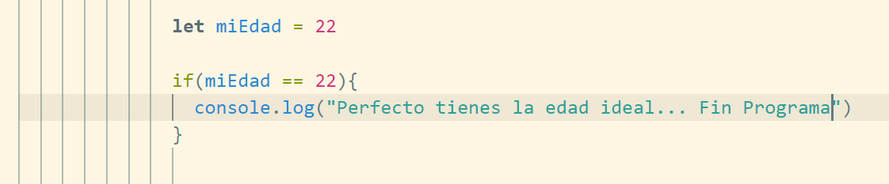
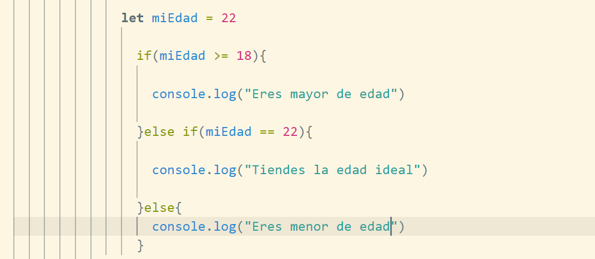
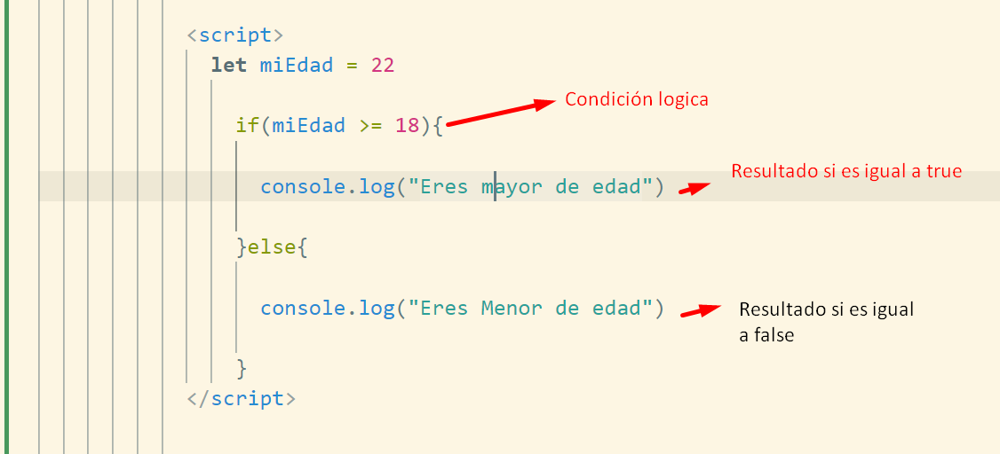
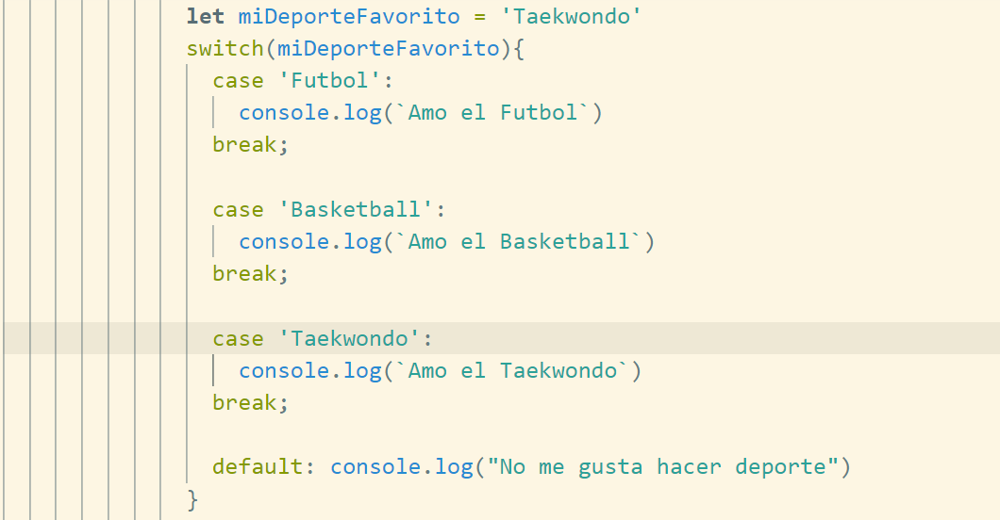
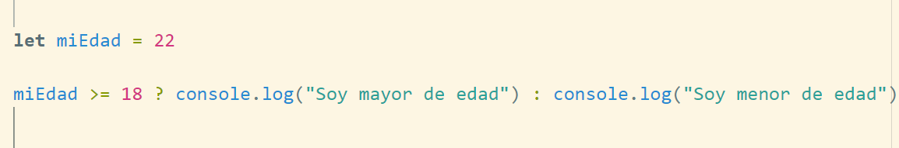

Es un espacio en memoria que nos permite alojar
algun tipo de dato, podemos hacer la analogia
a una caja donde guardamos cosas que probablemente
utilizaremos mas tarde, mas sin embargo tambien esta
caja puede quedar vacia un tiempo
¿Cuál es la diferencia entre declarar e inicializar una variable?
Declarar: Significa simplente nombrar una variable pero esta
no tendra ningun dato asignado, posteriormente en el transcurso
de nuestro programa podremos o no asignarle un valor y a
esta accion le llamamos inicializar la variable
¿Cuál es la diferencia entre sumar números y concatenar strings?
Al sumar numeros efectivamente hacemos dicha operacion
matematica, cuando contatemos strings lo que hacemos
es juntar esa cadena de datos
¿Cuál operador me permite sumar o concatenar?
Para ambos caso podemos emplear en signo + la
cuestion sera en la forma en la cual escribimos
esa instruccion no es lo mismo escribir 4+4
cuyo resultado sera 4 por que realmente se hace
la operacion matematica a escribir "4+4" cuyo
resultado sera 44. El uso de una 'comilla simple' o
"comilla doble" implica que nuestro tipo de dato es un
texto o string y para este no aplica ninguna operacion
matematica lo que hara sera juntar ese caracter o conjunto
de caracteres
Segundo Modulo
Determina el nombre y tipo de dato para almacenar en variables la siguiente información:
Nombre: José - String
Apellido: Ramiréz - String
Nombre de usuario en Platzi: JoseRamirezOz - String
Calcula e imprime las siguientes variables a partir de las variables del ejemplo anterior:
Si examinas esta seccion las operaciones estan hechas
con js por detras
Quinto modulo Funciones
¿Qué es una función?
Podemos tener la analogia de una maquina
a la cual se le introduce algo, se realiza
un proceso y nos otorga una salida
¿Cuándo me sirve usar una función en mi código?
Nos ayuda a optimizar codigo, que pueda ser
reutilizado multiples veces durante el ciclo de vida
del programa
¿Cuál es la diferencia entre parámetros y argumentos de una función?
Parametro: Son aquellos valores
a introducir para trabajarlos según
el proceso de la función
Argumento: Son en si los
valores que asignamos cuando mandamos a
llamar la función
Quinto modulo: Fase practica
Convierte el siguiente código en una
función, pero, cambiando cuando sea necesario
las variables constantes
por parámetros y argumentos en una función:
const name = "Juan David";
const lastname = "Castro Gallego";
const completeName = name + lastname;
const nickname = "juandc";
console.log("Mi nombre es " + completeName + ", pero prefiero que me digas " + nickname + ".");
Resultado:
Sexto modulo, Condicionales
¿Qué es un condicional?
Es una relación logica que nos permite tomar
una decision en base a 2 o mas criterios, que nos
retorne un valor booleano
¿Qué tipos de condicionales existen en JavaScript y cuáles son sus diferencias?
Tenemos 3 tipos de condicioneles:
If, Else If, y If Else: divimos este en
3 apartados ya que podemos crear 1 bloque
que solo nos de un resultado si se cumple
pero si no se cumple no habra ninguna acción
mas por hacer esto corresponde a ecribir:

Tenemos Else If y este buscara
mas opciones si es que la primera condicional
no se cumple, estas opciones donde buscara se le
definen mas condicionales para verificar si cumple alguna de ellas

Por ultimo tenemos If Else:
Tiene una opcion "por default" es decir que si
ninguna de las condicionales logicas se cumplio
pasara a esta ultima opción.

Switch Case: Podriamos traducirlo a un else if
ya que nos permite evaluar multiples opciones ¿Que cambia?
bueno solamente su estructura pero nos ayuda a llevar un
mejor control en la lectura y legibilidad del codigo.
Se compone de casos donde si uno resulta ser igual
bueno podemos realizar una acción, al finalizar cada
caso debemos concluir con un break ya que si no lo ponemos
el programa no se detendra y segira evaluando
los demas casos dandonos así un resultado no esperado
por ultimo de forma opcinal podemos colocar una
acción por defautl en caso de que ninguno de los
casos coincida con el valor dado

Operador ternario: Este es un condicional de
una sola linea y se a incorporado en las nuevas versiones
de EcmaScript 6+ nos permite llevar una limpieza de
codigo, escritura y legibilidad al momento de hacer condicionales.
Este metodo solo se puede emplear si nuestro valor de la operación
logica retorna un true o false

¿Puedo combinar funciones y condicionales?
Sí cualquier proceso que retorne un resultad se
puede llevar a cabo en una función
Sexto modulo: Fase practica
Replica el comportamiento del siguiente código que usa la sentencia switch utilizando if, else y else if:
const tipoDeSuscripcion = "Basic";
switch (tipoDeSuscripcion) {
case "Free":
console.log("Solo puedes tomar los cursos gratis");
break;
case "Basic":
console.log("Puedes tomar casi todos los cursos de Platzi durante un mes");
break;
case "Expert":
console.log("Puedes tomar casi todos los cursos de Platzi durante un año");
break;
case "ExpertPlus":
console.log("Tú y alguien más pueden tomar TODOS los cursos de Platzi durante un año");
break;
}